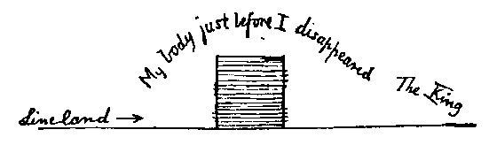

Thinking that it was time to bring down the Monarch from his raptures to the level of common sense, I determined to endeavour to open up to him some glimpses of the truth, that is to say of the nature of things in Flatland. So I began thus: "How does your Royal Highness distinguish the shapes and positions of his subjects? I for my part noticed by the sense of sight, before I entered your Kingdom, that some of your people are Lines and others Points, and that some of the Lines are larger — " "You speak of an impossibility," interrupted the King; "you must have seen a vision; for to detect the difference between a Line and a Point by the sense of sight is, as every one knows, in the nature of things, impossible; but it can be detected by the sense of hearing, and by the same means my shape can be exactly ascertained. Behold me — I am a Line, the longest in Lineland, over six inches of Space — " "Of Length," I ventured to suggest. "Fool," said he, "Space is Length. Interrupt me again, and I have done."
I apologized; but he continued scornfully, "Since you are impervious to argument, you shall hear with your ears how by means of my two voices I reveal my shape to my Wives, who are at this moment six thousand miles seventy yards two feet eight inches away, the one to the North, the other to the South. Listen, I call to them."
He chirruped, and then complacently continued: "My wives at this moment receiving the sound of one of my voices, closely followed by the other, and perceiving that the latter reaches them after an interval in which sound can traverse 6.457 inches, infer that one of my mouths is 6.457 inches further from them than the other, and accordingly know my shape to be 6.457 inches. But you will of course understand that my wives do not make this calculation every time they hear my two voices. They made it, once for all, before we were married. But they could make it at any time. And in the same way I can estimate the shape of any of my Male subjects by the sense of sound."
"But how," said I, "if a Man feigns a Woman's voice with one of his two voices, or so disguises his Southern voice that it cannot be recognized as the echo of the Northern? May not such deceptions cause great inconvenience? And have you no means of checking frauds of this kind by commanding your neighbouring subjects to feel one another?" This of course was a very stupid question, for feeling could not have answered the purpose; but I asked with the view of irritating the Monarch, and I succeeded perfectly.
"What!" cried he in horror, "explain your meaning." "Feel, touch, come into contact," I replied. "If you mean by feeling," said the King, "approaching so close as to leave no space between two individuals, know, Stranger, that this offence is punishable in my dominions by death. And the reason is obvious. The frail form of a Woman, being liable to be shattered by such an approximation, must be preserved by the State; but since Women cannot be distinguished by the sense of sight from Men, the Law ordains universally that neither Man nor Woman shall be approached so closely as to destroy the interval between the approximator and the approximated.
"And indeed what possible purpose would be served by this illegal and unnatural excess of approximation which you call touching, when all the ends of so brutal and coarse a process are attained at once more easily and more exactly by the sense of hearing? As to your suggested danger of deception, it is non-existent: for the Voice, being the essence of one's Being, cannot be thus changed at will. But come, suppose that I had the power of passing through solid things, so that I could penetrate my subjects, one after another, even to the number of a billion, verifying the size and distance of each by the sense of feeling: how much time and energy would be wasted in this clumsy and inaccurate method! Whereas now, in one moment of audition, I take as it were the census and statistics, local, corporeal, mental and spiritual, of every living being in Lineland. Hark, only hark!"
So saying he paused and listened, as if in an ecstasy, to a sound which seemed to me no better than a tiny chirping from an innumerable multitude of lilliputian grasshoppers.
"Truly," replied I, "your sense of hearing serves you in good stead, and fills up many of your deficiencies. But permit me to point out that your life in Lineland must be deplorably dull. To see nothing but a Point! Not even to be able to contemplate a Straight Line! Nay, not even to know what a Straight Line isl To see, yet be cut off from those Linear prospects which are vouchsafed to us in Flatland! Better surely to have no sense of sight at all than to see so little! I grant you I have not your discriminative faculty of hearing; for the concert of all Lineland which gives you such intense pleasure, is to me no better than a multitudinous twittering or chirping. But at least I can discern, by sight, a Line from a Point. And let me prove it. Just before I came into your kingdom, I saw you dancing from left to right, and then from right to left, with Seven Men and a Woman in your immediate proximity on the left, and eight Men and two Women on your right. Is not this correct?"
"It is correct," said the King, "so far as the numbers and sexes are concerned, though I know not what you mean by 'right' and 'left.' But I deny that you saw these things. For how could you see the Line, that is to say the inside, of any Man? But you must have heard these things, and then dreamed that you saw them. And let me ask what you mean by those words 'left' and 'right.' I suppose it is your way of saying Northward and Southward."
"Not so," replied I; "besides your motion of Northward and Southward, there is another motion which I call from right to left." King. Exhibit to me, if you please, this motion from left to right. I. Nay, that I cannot do, unless you could step out of your Line altogether.
King. Out of my Line? Do you mean out of the world? Out of Space?
I. Well, yes. Out of your World. Out of your Space. For your Space is not the true Space. True Space is a Plane; but your Space is only a Line.
King. If you cannot indicate this motion from left to right by yourself moving in it, then I beg you to describe it to me in words.
I. If you cannot tell your right side from your left, I fear that no words of mine can make my meaning clear to you. But surely you cannot be ignorant of so simple a distinction.
King. I do not in the least understand you.
I. Alas! How shall I make it clear? When you move straight on, does it not sometimes occur to you that you could move in some other way, turning your eye round so as to look in the direction towards which your side is now fronting? In other words, instead of always moving in the direction of one of your extremities, do you never feel a desire to move in the direction, so to speak, of your side?
King. Never. And what do you mean? How can a man's inside "front" in any direction? Or how can a man move in the direction of his inside?
I. Well then, since words cannot explain the matter, I will try deeds, and will move gradually out of Lineland in the direction which I desire to indicate to you.
At the word I began to move my body out of Lineland. As long as any part of me remained in his dominion and in his view, the King kept exclaiming, "I see you, I see you still; you are not moving." But when I had at last moved myself out of his Line, he cried in his shrillest voice, "She is vanished; she is dead." "I am not dead," replied I; "I am simply out of Lineland, that is to say, out of the Straight Line which you call Space, and in the true Space, where I can see things as they are. And at this moment I can see your Line, or side — or inside as you are pleased to call it; and I can see also the Men and Women on the North and South of you, whom I will now enumerate, describing their order, their size, and the interval between each."

When I had done this at great length, I cried triumphantly, "Does that at last convince you?" And, with that, I once more entered Lineland, taking up the same position as before.
But the Monarch replied, "If you were a Man of sense — though, as you appear to have only one voice I have little doubt you are not a Man but a Woman — but, if you had a particle of sense, you would listen to reason. You ask me to believe that there is another Line besides that which my senses indicate, and another motion besides that of which I am daily conscious. I, in return, ask you to describe in words or indicate by motion that other Line of which you speak. Instead of moving, you merely exercise some magic art of vanishing and returning to sight; and instead of any lucid description of your new World, you simply tell me the numbers and sizes of some forty of my retinue, facts known to any child in my capital. Can anything be more irrational or audacious? Acknowledge your folly or depart from my dominions."
Furious at his perversity, and especially indignant that he professed to be ignorant of my sex, I retorted in no measured terms, "Besotted Being! You think yourself the perfection of existence, while you are in reality the most imperfect and imbecile. You profess to see, whereas you can see nothing but a Point! You plume yourself on inferring the existence of a Straight Line; but I can see Straight Lines, and infer the existence of Angles, Triangles, Squares, Pentagons, Hexagons, and even Circles. Why waste more words? Suffice it that I am the completion of your incomplete self. You are a Line, but I am a Line of Lines, called in my country a Square: and even I, infinitely superior though I am to you, am of little account among the great nobles of Flatland, whence I have come to visit you, in the hope of enlightening your ignorance."
Hearing these words the King advanced towards me with a menacing cry as if to pierce me through the diagonal; and in that same moment there arose from myriads of his subjects a multitudinous war-cry, increasing in vehemence till at last methought it rivalled the roar of an army of a hundred thousand Isosceles, and the artillery of a thousand Pentagons. Spell-bound and motionless, I could neither speak nor move to avert the impending destruction; and still the noise grew louder, and the King came closer, when I awoke to find the breakfast-bell recalling me to the realities of Flatland.
Next: Chapter 15